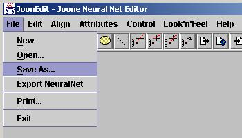

Menu Usage
Menu Items are displayed along the top of the Joone Editor.
Clicking on an item will reveal a list of menu options which can be
clicked to active the item.
Items followed by three dots will lead to a new window for further
input. Other items will directly perform the operation.
